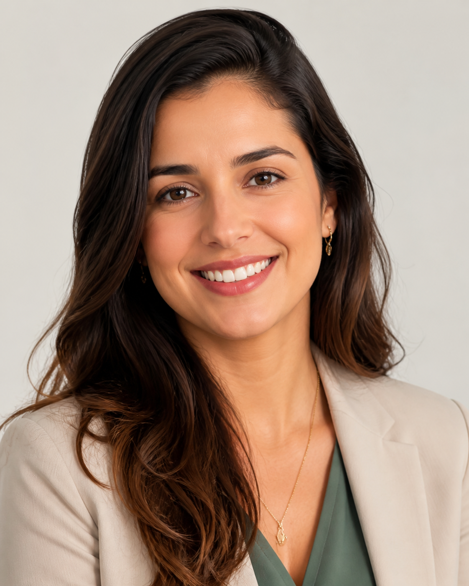
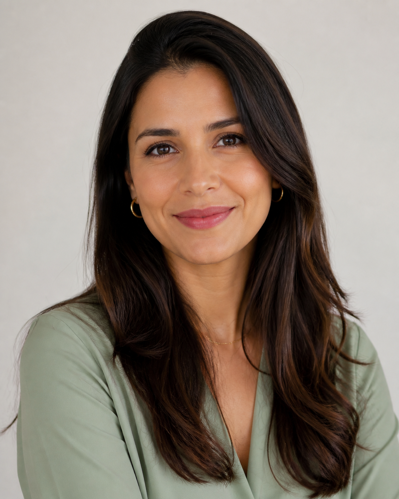
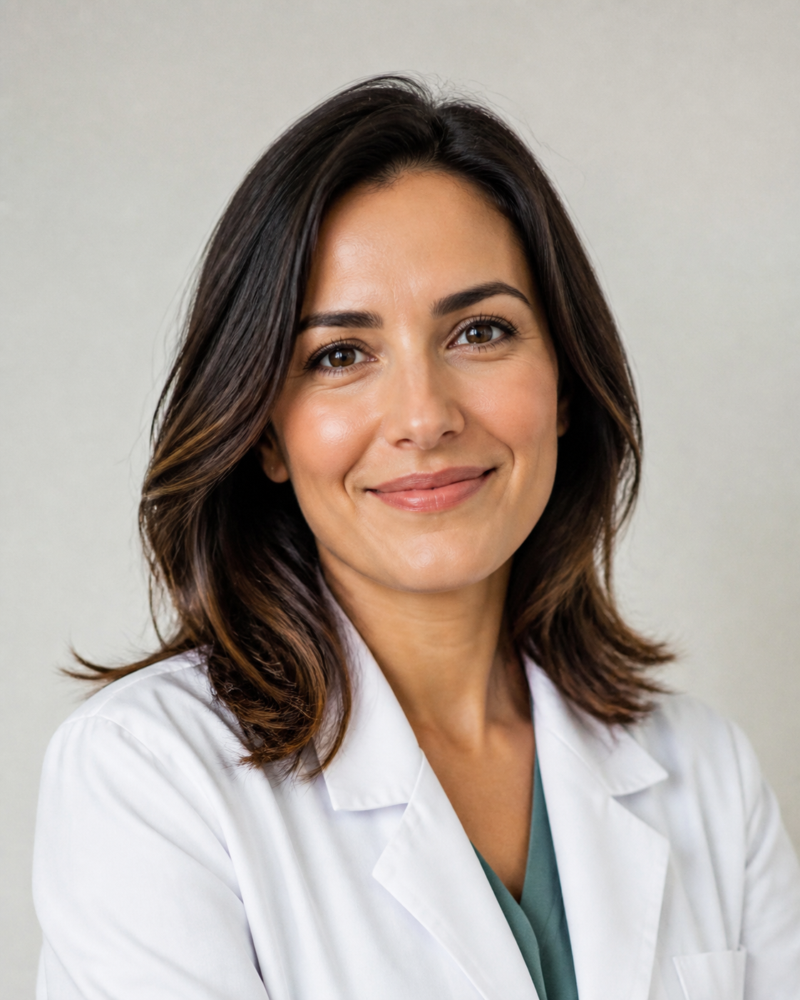
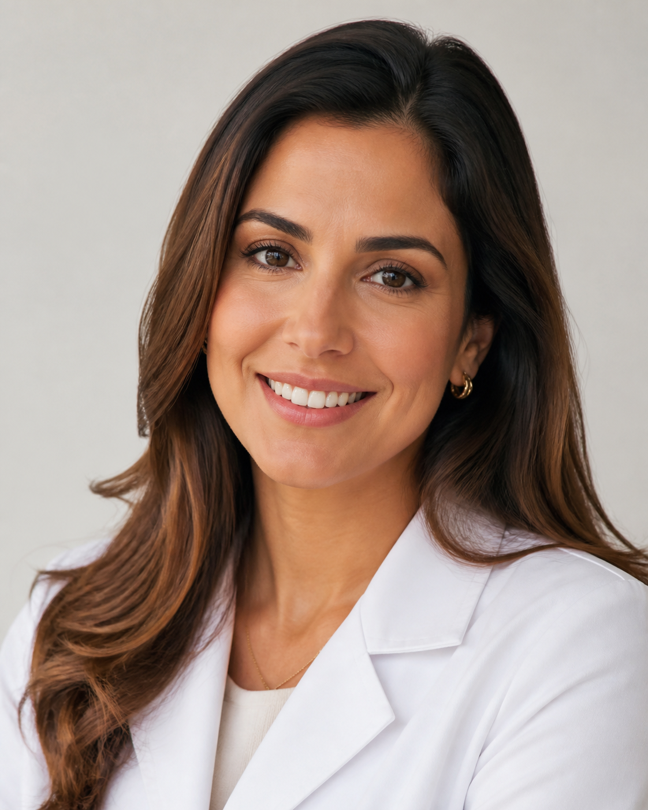

Dra. Ana Carolina Martins
Formação: Medicina pela Universidade Federal de Minas Gerais
Especialidade: Clínica geral
Registro: CRM-MG 000000
Atendimento: Segunda e quarta, das 8h às 13h
Profissionais preparados para cuidar da sua saúde com acolhimento, escuta e experiência.

Formação: Medicina pela Universidade Federal de Minas Gerais
Especialidade: Clínica geral
Registro: CRM-MG 000000
Atendimento: Segunda e quarta, das 8h às 13h
Formação: Medicina pela Universidade Federal de São Paulo
Especialidade: Cardiologia
Registro: CRM-SP 000000
Atendimento: Terça e quinta, das 9h às 15h

Formação: Psicologia pela Universidade de Brasília
Especialidade: Psicologia clínica
Registro: CRP 00/00000
Atendimento: Segunda e sexta, das 10h às 18h
Formação: Nutrição pela Universidade Federal do Paraná
Especialidade: Nutrição clínica
Registro: CRN-PR 00000
Atendimento: Quarta e sexta, das 8h às 14h

Formação: Fisioterapia pela Universidade Federal de Santa Catarina
Especialidade: Fisioterapia
Registro: CREFITO 000000-F
Atendimento: Segunda e quinta, das 13h às 19h

Formação: Dermatologia pela Universidade Federal do Rio de Janeiro
Especialidade: Dermatologia
Registro: CRM-RJ 000000
Atendimento: Terça e sábado, das 8h às 13h